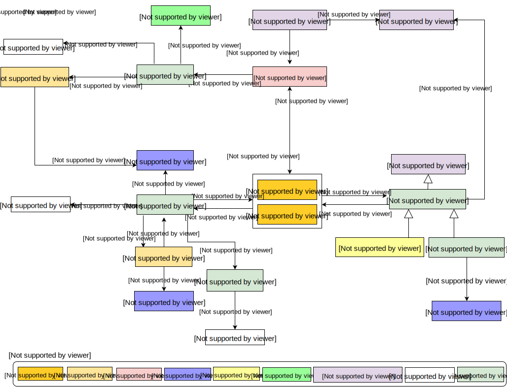

Datasets published on the Web are accessed and experienced by consumers in a variety of ways, but little information about these experiences is typically conveyed. Dataset publishers many times lack feedback from consumers about how datasets are used. Consumers lack an effective way to discuss experiences with fellow collaborators and explore referencing material citing the dataset. Datasets as defined by DCAT are a collection of data, published or curated by a single agent, and available for access or download in one or more formats. The Dataset Usage Vocabulary (DUV) is used to describe consumer experiences, citations, and feedback about the dataset from the human perspective.
By specifying a number of foundational concepts used to collect dataset consumer feedback, experiences, and cite references associated with a dataset, APIs can be written to support collaboration across the Web by structurally publishing consumer opinions and experiences, and provide a means for data consumers and producers advertise and search for published open dataset usage.
This is a draft document which may be merged into another document or eventually make its way into being a standalone Working Draft.
This vocabulary is meant to fill a niche that helps standardize the way Web published dataset usage be conveyed and shared. At this time there is no clear standard way to describe dataset usage on the Web. Without a means to systematically describe dataset usage, searching and conveying techniques are application specific and discovery and collaboration across the Web is more difficult. This vocabulary also recommends and requires data publishers to provide a mechanism of receiving data usage information from data consumers in the form of feedback, citation and data correction.
The namespace for DCAT is http://www.w3.org/ns/dcat#.
However, it should be noted that DCAT makes extensive use of terms from
other vocabularies, in particular Dublin
Core. DCAT itself defines a minimal set of classes and properties
of its own. A full set of namespaces and prefixes used in this document
is shown in the table below.
| Prefix | Namespace |
|---|---|
| dcat | http://www.w3.org/ns/dcat# |
| dct | http://purl.org/dc/terms/ |
| dctype | http://purl.org/dc/dcmitype/ |
| foaf | http://xmlns.com/foaf/0.1/ |
| rdf | http://www.w3.org/1999/02/22-rdf-syntax-ns# |
| rdfs | http://www.w3.org/2000/01/rdf-schema# |
| skos | http://www.w3.org/2004/02/skos/core# |
| xsd | http://www.w3.org/2001/XMLSchema# |
| duv | http://www.w3.org/ns/duv# |
| oa | http://www.w3.org/ns/oa# |
| rev | http://purl.org/stuff/rev# |
| prov | http://www.w3.org/ns/prov# |
| cito | http://purl.org/spar/cito# |
The DUV is intended for data producers and publishers interested in tracking, sharing, and persisting consumer dataset usage. It is also intended for collaborators who require an exchange medium to advertise and interactively convey dataset usage.
The scope of the DUV is defined by the Data on the Web Best Practices (DWBP) Use Case document [[DWBP-UCR]] based on the data usage requirements about datasets. These requirements include: citing data on the Web, tracking the usage of data, sharing feedback and rating data. These requirements were derived from fourteen real world use cases examples provided in the use case document.
The DUV is a “glue” vocabulary reusing and extending existing vocabulary classes and properties to support citation, feedback, and usage. This section provides our rationale and approach for vocabulary selection and reuse.
Core to the dataset usage vocabulary is the “dataset”. The DUV uses the Data Catalog Vocabulary's dcat:Dataset class and all properties associated with the class [[VOCAB-DCAT]]. From a data usage perspective the DUV can be considered an extension of dcat:Dataset.
The Web Annotation Vocabulary [[OA]] is used to describe duv:Feedback as a subclass inheriting the behavior of oa:Annotation. A crucial part of the Web Annotation Model are “motivations” that describe the role of particular Annotation. Each duv:Feedback must have at least one oa:motivated_by property with a relationship to an instance of oa:Motivation. A subset of the Motivation instances are important to describe feedback to data publishers, and blogs between dataset consumers. In addition to supporting duv:Feedback, because the Web Annotation vocabulary provides a generic way of annotating any Web resource, it is recommended that Web Annotation vocabulary be used to annotate the duv:Dataset for uses beyond the scope of the DUV.
The Provenance Ontology [[PROV-O]] is a vocabulary used by data providers to pass details about the data history to data users. Properties associated with prov:Activity provide relationships (prov:used, prov:hasGenerated) from a historical perspective using past tense forms of words and phrases. The developed and duv:WebThing reuses these properties by creating subProperties from Prov-O to describe usage from a present tense perspective.
Both the Citation Typing Ontology [[CITO]] and Dublin Core [[DC-TERMS]] vocabularies are used to describe citations and references between datasets and cited sources.
This section shows some examples to illustrate the application of the Dataset Usage Vocabulary.
Example 1 - Usage: A 2-D charting application developed to create temperature plots that consumes temperature readings from a dataset to produce the plot.
@prefix rdf: <http://www.w3.org/1999/02/22-rdf-syntax-ns#> .
@prefix rdf: <http://www.w3.org/1999/02/22-rdf-syntax-ns#> .
@prefix rdfs: <http://www.w3.org/2000/01/rdf-schema#> .
@prefix dcat: <http://www.w3.org/ns/dcat#> .
@prefix dct: <http://purl.org/dc/terms/> .
@prefix duv: <http://www.w3.org/ns/duv#> .
@prefix prov: <http://www.w3.org/nsprov#> .
@prefix : <http://example.org#> .
:plot-graphic
a prov:Activity;
rdfs:label "plots a 2d graphic";
prov:qualifiedAssociation [
a prov:Association;
prov:agent :xyplotter;
prov:hadRole :chart-software;
];
.
:plot-csv-data
a duv:Usage;
prov:qualifiedUsage :plot-graphic;
prov:entity :dataset-03312004
.
:xyplotter
a prov:Agent, prov:SoftwareAgent ;
rdfs:label "2dplotter" .
:chart-software
a prov:Role;
rdfs:label "software that creates charts"
.
:dataset-Jan-Mar-2004-csv
a dcat:Distribution;
.
:dataset-03312004
a dcat:Dataset;
dct:title "Quarterly Temperature Plot";
dcat:distribution :dataset-Jan-Mar-2004-csv;
.
{
"@graph" : [ {
"@id" : "_:b0",
"@type" : "prov:Association",
"agent" : "http://example.org#xyplotter",
"hadRole" : "http://example.org#chart-software"
}, {
"@id" : "http://example.org#chart-software",
"@type" : "prov:Role",
"rdfs:label" : "software that creates charts"
}, {
"@id" : "http://example.org#dataset-03312004",
"@type" : "dcat:Dataset",
"dct:title" : "Quarterly Temperature Plot",
"distribution" : "http://example.org#dataset-Jan-Mar-2004-csv"
}, {
"@id" : "http://example.org#dataset-Jan-Mar-2004-csv",
"@type" : "dcat:Distribution"
}, {
"@id" : "http://example.org#plot-csv-data",
"@type" : "duv:Usage",
"entity" : "http://example.org#dataset-03312004",
"qualifiedUsage" : "http://example.org#plot-graphic"
}, {
"@id" : "http://example.org#plot-graphic",
"@type" : "prov:Activity",
"rdfs:label" : "plots a 2d graphic",
"qualifiedAssociation" : "_:b0"
}, {
"@id" : "http://example.org#xyplotter",
"@type" : [ "prov:Agent", "prov:SoftwareAgent" ],
"rdfs:label" : "2dplotter"
} ],
"@context" : {
"agent" : {
"@id" : "http://www.w3.org/nsprov#agent",
"@type" : "@id"
},
"hadRole" : {
"@id" : "http://www.w3.org/nsprov#hadRole",
"@type" : "@id"
},
"qualifiedUsage" : {
"@id" : "http://www.w3.org/nsprov#qualifiedUsage",
"@type" : "@id"
},
"entity" : {
"@id" : "http://www.w3.org/nsprov#entity",
"@type" : "@id"
},
"label" : {
"@id" : "http://www.w3.org/2000/01/rdf-schema#label",
"@type" : "http://www.w3.org/2001/XMLSchema#string"
},
"title" : {
"@id" : "http://purl.org/dc/terms/title",
"@type" : "http://www.w3.org/2001/XMLSchema#string"
},
"distribution" : {
"@id" : "http://www.w3.org/ns/dcat#distribution",
"@type" : "@id"
},
"qualifiedAssociation" : {
"@id" : "http://www.w3.org/nsprov#qualifiedAssociation",
"@type" : "@id"
},
"dct" : "http://purl.org/dc/terms/",
"duv" : "http://www.w3.org/ns/duv#",
"rdf" : "http://www.w3.org/1999/02/22-rdf-syntax-ns#",
"rdfs" : "http://www.w3.org/2000/01/rdf-schema#",
"dcat" : "http://www.w3.org/ns/dcat#",
"prov" : "http://www.w3.org/nsprov#"
}
}
Example 2 - Feedback: Laufer provides feedback about the temperature readings dataset.
@prefix rdf: <http://www.w3.org/1999/02/22-rdf-syntax-ns#> . @prefix rdfs: <http://www.w3.org/2000/01/rdf-schema#> . @prefix foaf: <http://xmlns.com/foaf/0.1/> . @prefix dcat: <http://www.w3.org/ns/dcat#> . @prefix dct: <http://purl.org/dc/terms#> . @prefix oa: <http://www.w3.org/ns/oa#> . @prefix duv: <http://www.w3.org/ns/duv#> . @prefix : <http://example.org#> . :laufer a duv:Person ; foaf:givenName "Laufer" ; foaf:mbox <mailto:laufer@example.org> ; . :dataset-03312004 a dcat:Dataset ; dct:title "Mars Quarterly Temperature Plot" ; . :comment1 a duv:Feedback ; oa:hasBody "Written in MS-DOS text format." ; oa:hasTarget :dataset-03312004 ; oa:annotatedBy :laufer ; . :comment2 a duv:Feedback; duv:hasRating "3 Star"; oa:hasBody "Linked Data Rating"; oa:hasTarget :dataset-03312004; .
{
"@graph" : [ {
"@id" : "http://example.org#comment1",
"@type" : "duv:Feedback",
"annotatedBy" : "http://example.org#laufer",
"oa:hasBody" : "Written in MS-DOS text format.",
"hasTarget" : "http://example.org#dataset-03312004"
}, {
"@id" : "http://example.org#comment2",
"@type" : "duv:Feedback",
"duv:hasRating" : "3 Star",
"oa:hasBody" : "Linked Data Rating",
"hasTarget" : "http://example.org#dataset-03312004"
}, {
"@id" : "http://example.org#dataset-03312004",
"@type" : "dcat:Dataset",
"dct:title" : "Mars Quarterly Temperature Plot"
}, {
"@id" : "http://example.org#laufer",
"@type" : "duv:Person",
"foaf:givenName" : "Laufer",
"mbox" : "mailto:laufer@example.org"
} ],
"@context" : {
"title" : {
"@id" : "http://purl.org/dc/terms#title",
"@type" : "http://www.w3.org/2001/XMLSchema#string"
},
"hasRating" : {
"@id" : "http://www.w3.org/ns/duv#hasRating",
"@type" : "http://www.w3.org/2001/XMLSchema#string"
},
"hasBody" : {
"@id" : "http://www.w3.org/ns/oa#hasBody",
"@type" : "http://www.w3.org/2001/XMLSchema#string"
},
"hasTarget" : {
"@id" : "http://www.w3.org/ns/oa#hasTarget",
"@type" : "@id"
},
"annotatedBy" : {
"@id" : "http://www.w3.org/ns/oa#annotatedBy",
"@type" : "@id"
},
"givenName" : {
"@id" : "http://xmlns.com/foaf/0.1/givenName",
"@type" : "http://www.w3.org/2001/XMLSchema#string"
},
"mbox" : {
"@id" : "http://xmlns.com/foaf/0.1/mbox",
"@type" : "@id"
},
"oa" : "http://www.w3.org/ns/oa#",
"dct" : "http://purl.org/dc/terms#",
"duv" : "http://www.w3.org/ns/duv#",
"rdf" : "http://www.w3.org/1999/02/22-rdf-syntax-ns#",
"rdfs" : "http://www.w3.org/2000/01/rdf-schema#",
"dcat" : "http://www.w3.org/ns/dcat#",
"foaf" : "http://xmlns.com/foaf/0.1/"
}
}
Example 3 - Citation: A technical report :paperA identified by a DOI cites the dataset. The :dataset-03312013 is also identified by a digital object identifier (DOI).
@prefix rdf: <http://www.w3.org/1999/02/22-rdf-syntax-ns#> .
@prefix xsd: <http://www.w3.org/2001/XMLSchema#> .
@prefix rdfs: <http://www.w3.org/2000/01/rdf-schema#> .
@prefix foaf: <http://xmlns.com/foaf/0.1/> .
@prefix dcat: <http://www.w3.org/ns/dcat#> .
@prefix dct: <http://purl.org/dc/terms#> .
@prefix oa: <http://www.w3.org/ns/oa#> .
@prefix cito: <http://purl.org/spar/cito#> .
@prefix duv: <http://www.w3.org/ns/duv#> .
@prefix : <http://example.org#> .
:dataset-03312013
a dcat:Dataset;
dc:identifier "doi:10.1038/ex2158";
dct:title "Mars Quarterly Temperature Plot"@en ;
dct:alternative "Qtrly Temp Plot"@en;
dct:description "This plot features average surface temperatures measured by the Mars Land Rover. "@en ;
dct:created "2013-03-31T15:18:00Z"^^xsd:dateTime ;
dct:creator "Laufer" ;
dct:license <http://creativecommons.org/licenses/by-sa/3.0/> ;
dcat:keyword "Mars";
dct:language <http://www.lexvo.org/page/iso639-3/eng> ;
cito:isCitedAsDataSourceBy :paperA ;
.
:thisCitation
a duv:Citation;
cito:hasCitingEntity :dataset-03312004;
cito:hasCitedEntity :paperA;
.
:paperA
a foaf:document
dc:identifier "doi:20.1055/ex7758";
dct:title "Mars Weather Technical Report"@en;
duv:cites :dataset-03312004;
.
{
"@graph" : [ {
"@id" : "http://example.org#dataset-03312013",
"@type" : "dcat:Dataset",
"dct:alternative" : {
"@language" : "en",
"@value" : "Qtrly Temp Plot"
},
"created" : "2013-03-31T15:18:00Z",
"dct:creator" : "Laufer",
"dct:description" : {
"@language" : "en",
"@value" : "This plot features average surface temperatures measured by the Mars Land Rover. "
},
"dct:identifier" : "doi:10.1038/ex2158",
"language" : "http://www.lexvo.org/page/iso639-3/eng",
"license" : "http://creativecommons.org/licenses/by-sa/3.0/",
"dct:title" : {
"@language" : "en",
"@value" : "Mars Quarterly Temperature Plot"
},
"isCitedAsDataSourceBy" : "http://example.org#paperA",
"dcat:keyword" : "Mars"
}, {
"@id" : "http://example.org#paperA",
"@type" : "foaf:document",
"dct:identifier" : "doi:20.1055/ex7758",
"dct:title" : {
"@language" : "en",
"@value" : "Mars Weather Technical Report"
},
"cites" : "http://example.org#dataset-03312004"
}, {
"@id" : "http://example.org#thisCitation",
"@type" : "duv:Citation",
"hasCitedEntity" : "http://example.org#paperA",
"hasCitingEntity" : "http://example.org#dataset-03312004"
} ],
"@context" : {
"identifier" : {
"@id" : "http://purl.org/dc/terms#identifier",
"@type" : "http://www.w3.org/2001/XMLSchema#string"
},
"title" : {
"@id" : "http://purl.org/dc/terms#title",
"@type" : "http://www.w3.org/1999/02/22-rdf-syntax-ns#langString"
},
"cites" : {
"@id" : "http://www.w3.org/ns/duv#cites",
"@type" : "@id"
},
"creator" : {
"@id" : "http://purl.org/dc/terms#creator",
"@type" : "http://www.w3.org/2001/XMLSchema#string"
},
"keyword" : {
"@id" : "http://www.w3.org/ns/dcat#keyword",
"@type" : "http://www.w3.org/2001/XMLSchema#string"
},
"isCitedAsDataSourceBy" : {
"@id" : "http://purl.org/spar/cito#isCitedAsDataSourceBy",
"@type" : "@id"
},
"alternative" : {
"@id" : "http://purl.org/dc/terms#alternative",
"@type" : "http://www.w3.org/1999/02/22-rdf-syntax-ns#langString"
},
"created" : {
"@id" : "http://purl.org/dc/terms#created",
"@type" : "http://www.w3.org/2001/XMLSchema#dateTime"
},
"language" : {
"@id" : "http://purl.org/dc/terms#language",
"@type" : "@id"
},
"license" : {
"@id" : "http://purl.org/dc/terms#license",
"@type" : "@id"
},
"description" : {
"@id" : "http://purl.org/dc/terms#description",
"@type" : "http://www.w3.org/1999/02/22-rdf-syntax-ns#langString"
},
"hasCitingEntity" : {
"@id" : "http://purl.org/spar/cito#hasCitingEntity",
"@type" : "@id"
},
"hasCitedEntity" : {
"@id" : "http://purl.org/spar/cito#hasCitedEntity",
"@type" : "@id"
},
"oa" : "http://www.w3.org/ns/oa#",
"dct" : "http://purl.org/dc/terms#",
"duv" : "http://www.w3.org/ns/duv#",
"rdf" : "http://www.w3.org/1999/02/22-rdf-syntax-ns#",
"xsd" : "http://www.w3.org/2001/XMLSchema#",
"rdfs" : "http://www.w3.org/2000/01/rdf-schema#",
"dcat" : "http://www.w3.org/ns/dcat#",
"foaf" : "http://xmlns.com/foaf/0.1/",
"cito" : "http://purl.org/spar/cito#"
}
}
This section is non-normative.
This section depicts the vocabulary as a conceptual model. Shaded boxes are used to identify each class. Labeled open arrows identify example properties between the classes. Unlabeled shaded arrows are used to show inheritance with the parent class identified by the arrow head.
| RDF Class: | duv:Citation |
|---|---|
| Definition | Citation in document that references dataset. |
| rdfs:isDefinedBy | http://www.w3.org/ns/duv |
| Label | Citation |
| rdfs:subClassOf | cito:CitationsAct |
| RDF Property: | cito:hasCitedEntity |
|---|---|
| Definition | The dataset, distribution, or publication of interest being cited. |
| Range | duv:Publication, dcat:Dataset, dcat:Distribution |
| RDF Class: | duv:Publication |
|---|---|
| Definition | Electronic publication that references dataset or distribution. |
| rdfs:isDefinedBy | http://www.w3.org/ns/duv |
| Label | Publication |
| RDF Class: | duv:RatingFeedback |
|---|---|
| Definition | Predefined criteria used to express a user opinion about a dataset or distribution using a discrete range of values. |
| rdfs:isDefinedBy | http://www.w3.org/ns/duv |
| Label | RatingFeedback |
| rdfs:subClassOf | duv:UserFeedback |
| RDF Property: | dct:title |
|---|---|
| Definition | A name given to the Application |
| Range | rdfs:Literal |
| RDF Property: | dct:description |
|---|---|
| Definition | A free-text description of the Application |
| Range | rdfs:Literal |
| RDF Property: | duv:developedBy |
|---|---|
| Definition | Describes the agent associated with the development of an application |
| Range | foaf:Agent |
| Label | developed by |
| rdfs:isDefinedBy | http://www.w3c.org/ns/duv |
| RDF Property: | duv:consumes |
|---|---|
| Definition | A dataset being consumed by an application. |
| Range | dcat:Dataset |
| Label | consumes |
| rdfs:isDefinedBy | http://www.w3c.org/ns/duv |
| RDF Property: | duv:generates |
|---|---|
| Definition | Usage experience associated with the dataset being generated. |
| Range | dcat:Dataset |
| Label | generates |
| rdfs:isDefinedBy | http://www.w3c.org/ns/duv |
| rdfs:subPropertyOf | prov:generated |
| RDF Class: | duv:Usage |
|---|---|
| Definition | A helpful description of actions that can be performed on a given dataset or distribution. |
| rdfs:isDefinedBy | http://www.w3.org/ns/duv |
| Label | Usage |
| RDF Class: | duv:UsageActor |
|---|---|
| Definition | A persona or archetype associated with particular usage actions on a given dataset or distribution. |
| rdfs:isDefinedBy | http://www.w3.org/ns/duv |
| Label | Usage Actor |
| RDF Class: | duv:UsageTool |
|---|---|
| Definition | A synopsis descri the way a tool can use a dataset or distribution. |
| rdfs:isDefinedBy | http://www.w3.org/ns/duv |
| Label | Usage Actor |
| RDF Class: | duv:UserFeedback |
|---|---|
| Definition | User feedback on the dataset. Expresses whether the dataset was useful or not, for example. |
| rdfs:isDefinedBy | http://www.w3.org/ns/duv |
| Label | User Feedback |
| rdfs:subClassOf | oa:Annotation |
This section shows some of the requirements that motivated the development of the Dataset Usage Vocabulary. These requirements were derived from the use cases described in Data on the Web Best Practices Use Cases & Requirements document.
It should be possible to track the usage of data.
Capability of tracking data usage can help enhancing reputation of the datasets. Records of data usage shows all the successful outcome of the data usage and all the entities associated with it such as the person, organisation, application, research projects that has used these datasets. It increases trust in the data. It also provides provence about how data versions over the time.
| Use Case | R-TrackDataUsage Benefits |
|
Airborne Snow Observatory |
Data is used in decision making
process by Water Reservoir Managers. Capability to track usage
of data will lead to identification of all the decisions and
policy changes made by authorities based on this data. It will
also list applications, tools and frameworks suitable for
analysis of this kind of data. |
| LandPortal
|
Data is used in Research; Policy Making, Journalism; Development; Investments; Governance; Food security; Poverty; Gender issues. Usage tracking will help in assessing the impact of published data. |
|
LusTRE |
>Data is put in public for reuse and reference in nature
conservation activities. Information about use of this data
will determined impact of this framework. Usage of this data
MUST lead to future publications of less heterogenous data and
more and more used of standardised thesauri. |
|
Open Experimental Field Studies |
Data is used in computational
models and studies. Capabilities to track usage of data will
enable data publishers to identify all the users communities
making use of this data. It will also identify combined use of
multiple datasets in one big study. This will identify related
datasets which can be recommended to future users. |
| RDESC |
Data is published in Linked
Data Format for discovery and recommendations of related
datasets. Capability to keep track of its usage will list all
the tools and application suitable to be used with this data.
Because RDESC is not data publisher but more of a data
facilitator, usage tracking will identify highly search dataset
and the trends in the temporal, spatial and domain specific
search queries. |
|
UKOpenResearchForum |
Data is published with
intelligent openness to support research projects. Capability to
track data usage will provide adequate acknowledgement to data
originator. |
Data consumers should have a way of sharing feedback and rating data.
User feedback is important to address data quality concerns about published dataset. Different users may have different experience with the same dataset so it is important to capture the context in which data was used and the profile of the user who uses it. R-UsageFeedback should also provide a way to communicate suggested corrections and update to the datasets by the users back to data publisher. Data publishers should have a review mechanism to incorporate submitted corrections.
| Use Case | R-UsageFeedback Benefits |
|
Airborne Snow Observatory |
Data grows rapidly each year.
User feedback can reports issues of data completeness and
correctness. |
| DadosGovBr |
Data came from various
publishers. As a catalog, the site has faced several challenges,
one of them was to integrate the various technologies and
formulas used by publishers to provide datasets in the portal.
User feedback can provided usabilities of those technologies and
formulas. User feedback can be used to crowdsource discrepancies
in the vocabularies used to describe datasets. |
|
LusTRE |
Data multilingualism is one of
the challenge for this use case. User feedback can be used to
crowdsource multilingual text alignment. |
| Experimental
Field Studies |
Data is used in computational
models and studies. User feedback can be used to identify good
quality data required for good quality research. completeness,
time resolution and usability can be captured using user
feedback.> |
| RDESC |
RDESC curate different data
source and publish metadata in Linked Data Format. User feedback
is useful to assess metadata quality. Availability of the source
datasets, Correctness of persistent URI, Correctness of the
concepts defined in RDESC such as FOAF Agents, Organizations,
Physical Properties and Usability of the search interface can be
captured in user feedback. |
It should be possible to cite data on the Web.
| Use Case | R-Citable Benefits |
|
Open Experimental Field Studies |
Various experiments and fields
studies are performed to generate data which is used in
computational models and bigger studies.Capability to capture
all the citations of the published data can justify the efforts
used in publishing. Citation information can be used to identify
all the user communities interested in data source. |
|
LATimes |
On 27 March 2014, the LA Times published a story Women earn 83 cents for every $1 men earn in L.A. city government. It was based on an Infographic released by LA's City Controller, Ron Galperin. This report could only cite data portal of all the resource. It could not cite to exact dataset because tool long URI. |
| RDESC |
RDESC is a data curator so it
uses data from different sources. But this usage is not
communicated to data publishers because of lack of such
mechanism provided by publishers. |